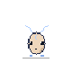
ルナコン ・ ニードル期
CONPASS
話しかけるだけで予定が入り、育ち、怪しい連絡も一緒に見張ってくれる。
AIの相棒アプリ「CONPASS」を企画・制作しました。
個人制作 / 2026 / 企画・設計・キャラクター・開発（AI を使って制作）
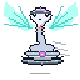
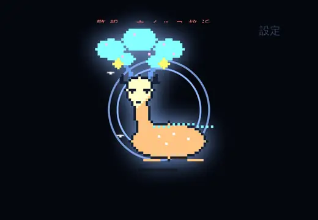
話すと、予定が入ります。
「明日の15時に歯医者」と話すだけで、Googleカレンダーに入ります。打ち込む必要はありません。
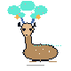
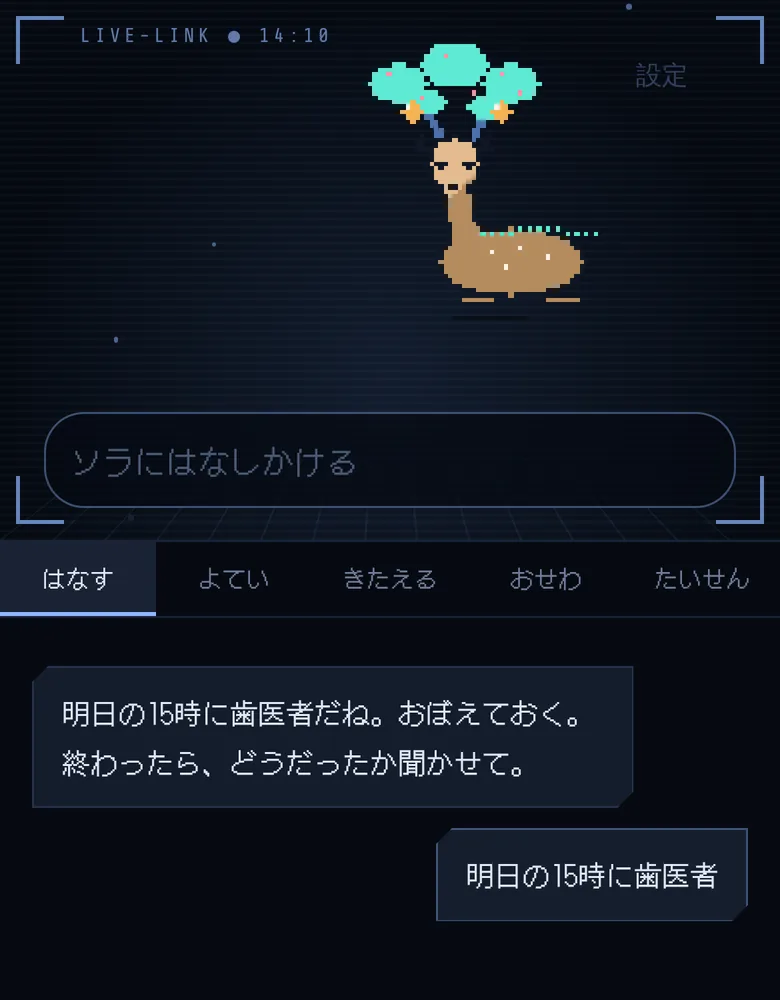
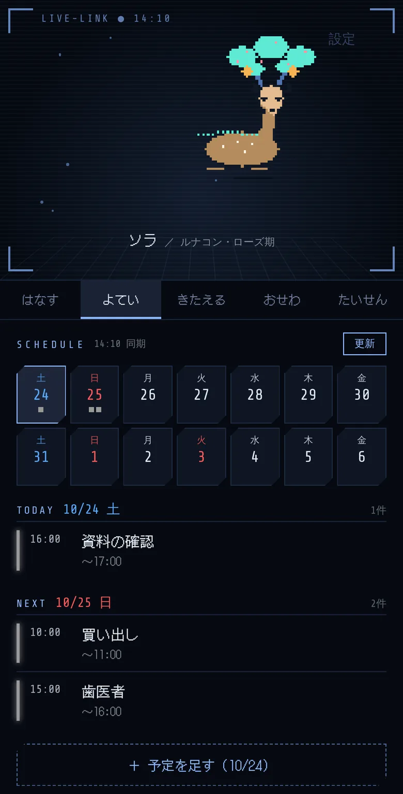
話すほど、進化します。
会話と、現実での「走った」「勉強した」の報告で育ちます。世話をしなくても弱りません。
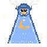
怪しい連絡を、一緒に倒します。
届いたSMSやメールを貼ると、コンが見ます。あやしいときだけ、手口ごとの敵が現れます。
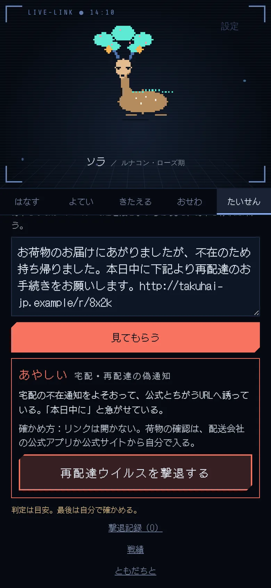
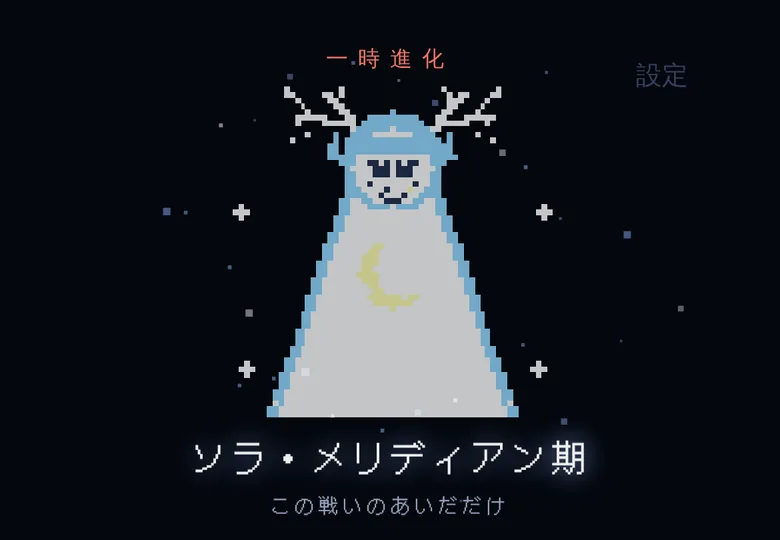
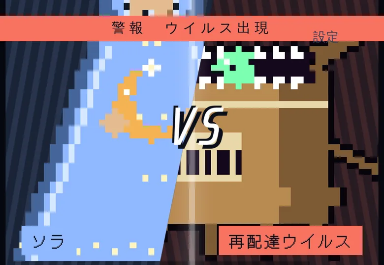
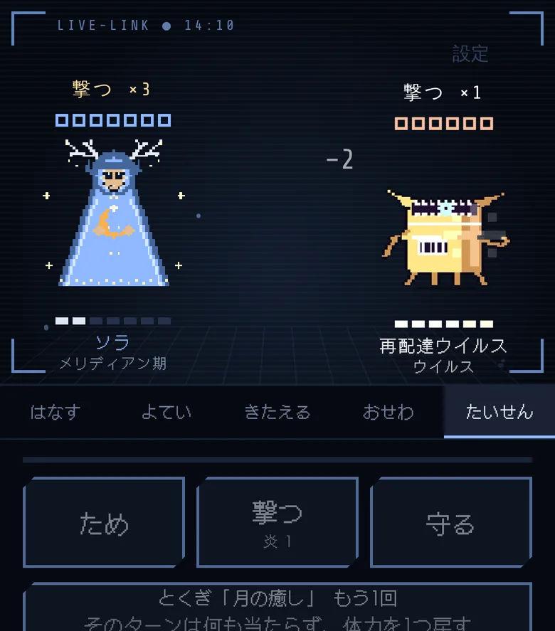
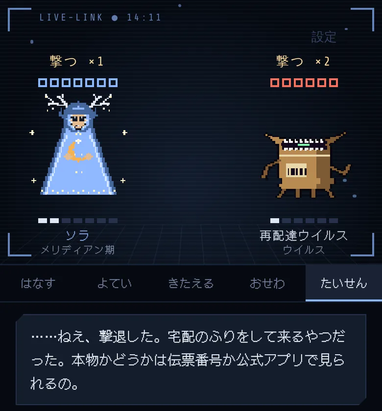
横にスワイプ
手口ごとの敵 7種
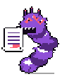
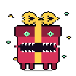
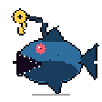
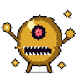
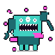
＋隠れキャラ
やったぶんで進化
なぜ作ったか
自分が困っていたことを、やることを増やさずに、やりたくなる形に置きかえました。
記録アプリに毎日入力する
話しかければ入るようにしました
入力が手間で、記録アプリが続きませんでした。
世話をしないと弱る
世話の義務をなくしました
放っておいても弱りません。話したぶん、やったぶんで育ちます。
怪しい連絡を自分で調べる
貼るだけで、戦いになるようにしました
面倒で、聞ける人もいなくて、だんだん確かめなくなっていました。
起点にした考えは「相棒の使命は、守ること」です。課題はどれも自分の実感からです。
64体を描き分けました
12問の答えで、16の系統のどれかが生まれます。段階を切りかえて見られます。
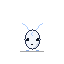
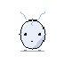
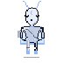
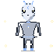
隠れキャラ「旅の子」 性格の傾きがどの軸でも真ん中に近いまま育つと、進化のときにこの姿になります。診断では出てきません。
このページで、動かせます
アプリ本体をそのまま入れています。診断から、見張りで戦うところまで試せます。
- 0112問に答えて、たまごをつつきます（冒頭は右上の「とばす」で飛ばせます）
- 02名前をつけて、話しかけてみてください。「明日の15時に歯医者」など
- 03「たいせん」→「見張り」に下の文面を貼って、「見てもらう」を押します
お荷物のお届けにあがりましたが、不在のため持ち帰りました。本日中に下記より再配達のお手続きをお願いします。http://takuhai-jp.example/r/8x2k
【重要】ご利用料金の未払いがあります。24時間以内にお支払いがない場合、ご利用を停止します。http://pay-check-jp.example/
明日の飲み会、19時に駅前でいい？
このページでは AI につながらないので、判定は手元の言葉の点数による「かんたん判定」、会話もかんたんな返事になります。Googleカレンダーにはつながりません。
ゲームにしても、ゆずらないこと
遊びにした分、判定を信じすぎないように決めたことです。すべて実装しています。
- いつも「判定は目安。最後は自分で確かめる。」と表示します
- 判断がつかないときは「保留」にして、戦いません
- 負けても、取るべき行動は変えません「逃げられた。でも中身は変わらない。リンクは開かないでおこう。」
- AIにつながらないときは「安全」と言いません
- 貼った文面は保存しません。文面の中の指示にも従いません
- コンは診断や説教をしません
いま言えること、まだ言えないこと
事実いま言えること
- 自分で、iPhone と PC で日常的に使っていますclaude.ai 上の非公開アプリとして動かしています
- 改修を重ねて、現在78版です
- このページに書いた仕組みは、すべて実装済みです
未確認まだ言えないこと
- 判定の精度、使う頻度利用ログをとっていないため、数字では言えません
- ほかの人での検証想定している使い手は高齢の人や若い人ですが、まだ試していません
- 配布AIを Claude 経由で動かしているため、このままでは配れません
くわしい仕組み
育ち方の数字
| たまるもの | 増え方 | 1日の上限 |
|---|---|---|
| 会話 | +1 | 8回 |
| 達成の報告 | +2 | 3回 |
| 段階 | ゲージ | 達成の数 |
|---|---|---|
| ニードル期 | 0 | 0 |
| ベアリング期 | 20 | 0 |
| ローズ期 | 120 | 8 |
| メリディアン期 | 400 | 40 |
数値は画面に出しません。「おせわ」「きたえる」「たいせん」は、それぞれ1日5回までです。口調は生まれた系統で決まり、育っても変わりません。
見張りの判定
ふだんは Claude が文面を読んで判定します。日本でよくある手口、URLのドメイン、急がせる言い方、お金や個人情報を求める言い方を見ます。
AIにつながらないときは手元の点数で判定します。手口の言葉 1点、急がせる言葉 1点、お金・個人情報 1点、あやしいURL 2点。合計3点以上で「あやしい」と判定します。
戦う前にコンが約3.4秒だけ1段階進化し、警報とVSのカットインが約2.1秒入ります。敵の強さは、コンの段階の前後1段階です。勝つと「守り」が+2されます（1日2回まで）。見張りの戦いは1日の対戦回数を使いません。記録は、日付・敵・結果・確かめ方の4つを30件まで残します。
予定の連携
会話から予定の登録、変更、取り消しができます（Googleカレンダー）。予定が終わって6時間以内に、コンから「どうだった？」と聞いてきます。
掲載画面について
画面は撮影用のデータで撮っています。名前（ソラ、テスト）、予定、URLは架空のものです。会話の返事と判定の文面は撮影用に用意したもので、実際には Claude がその都度書きます。勝ち負けの台詞、手口の名前、キャラクターはアプリのものです。画面右上のタイプ表示は省いています。